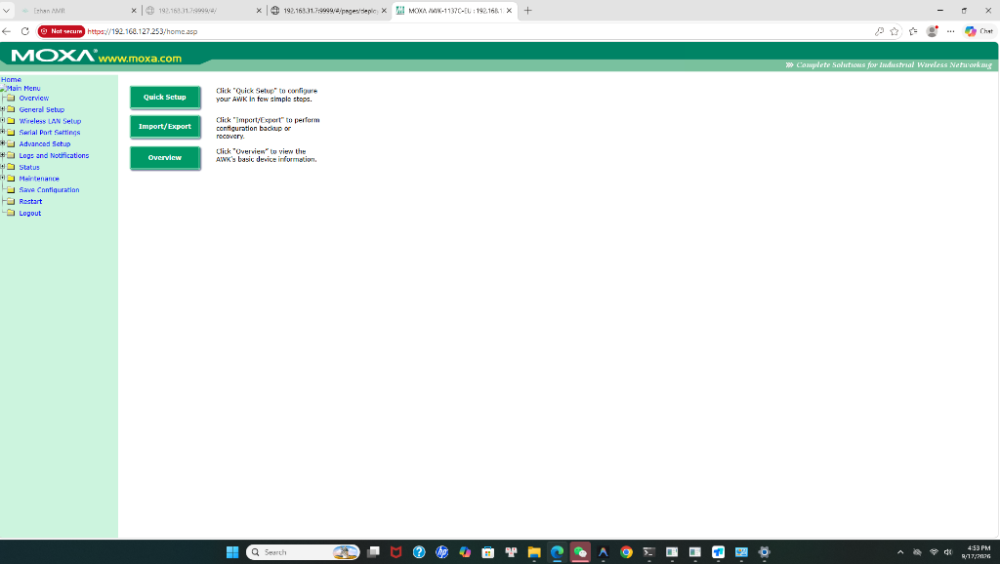
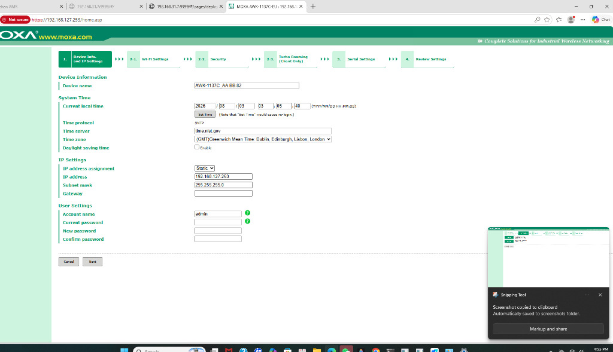
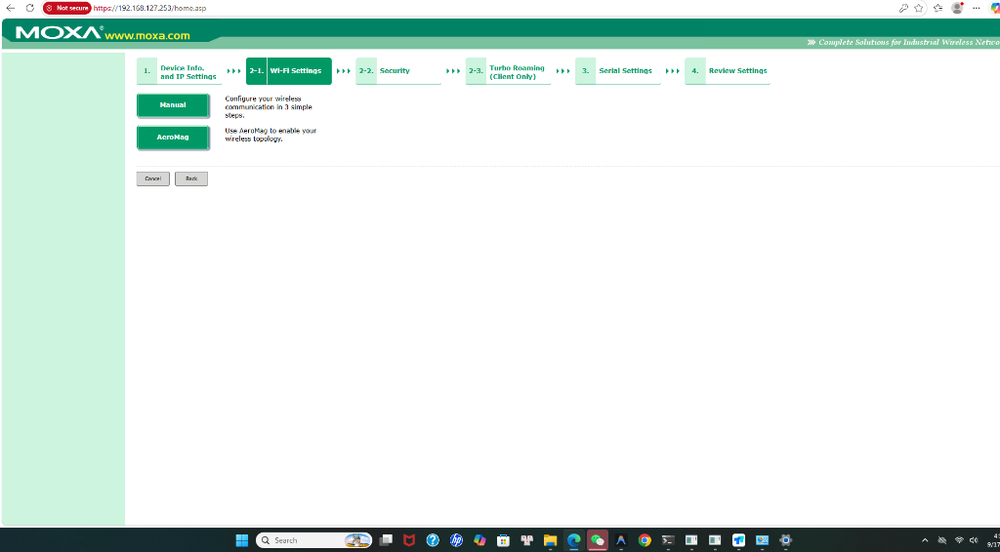
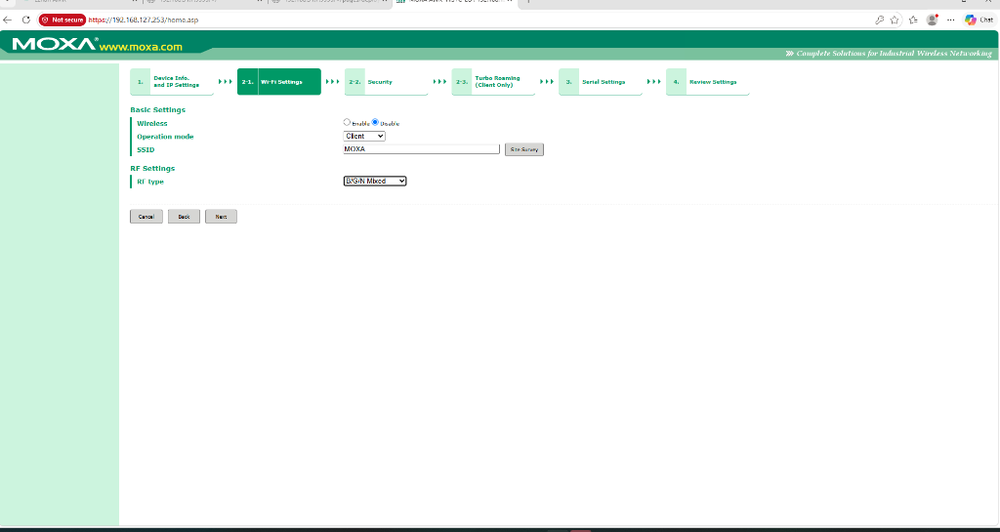
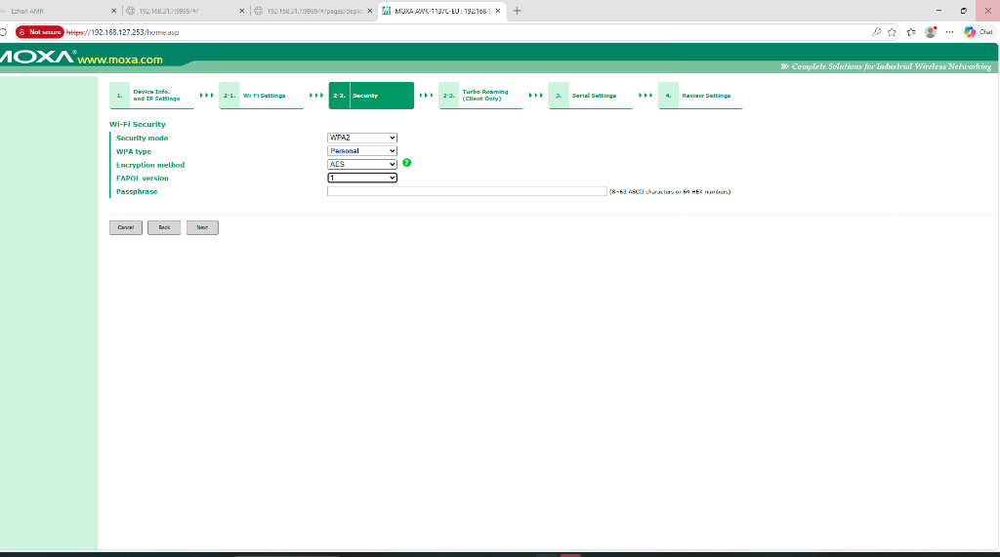
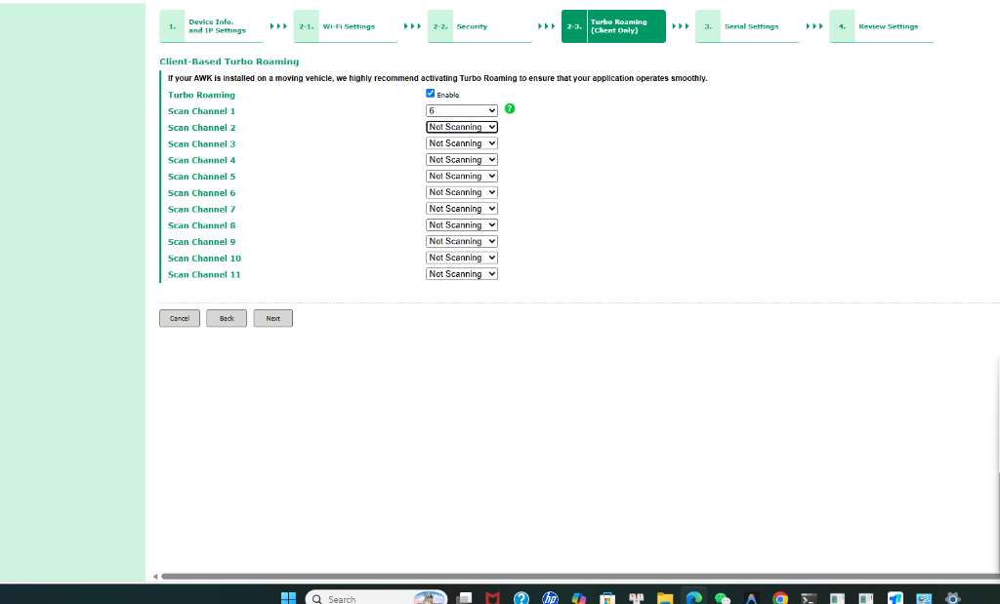
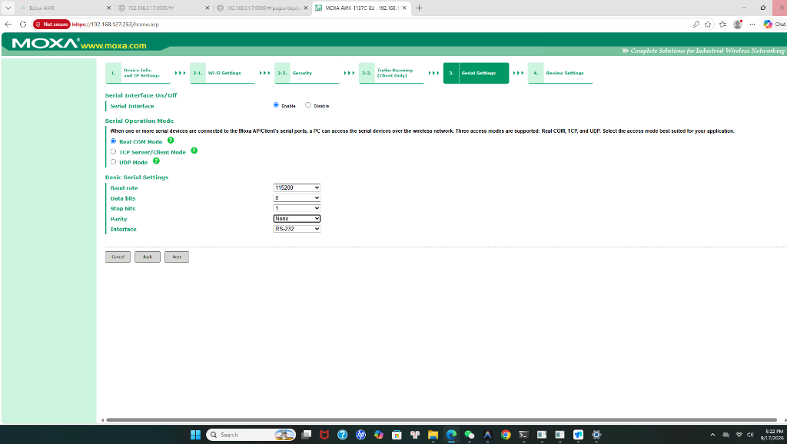
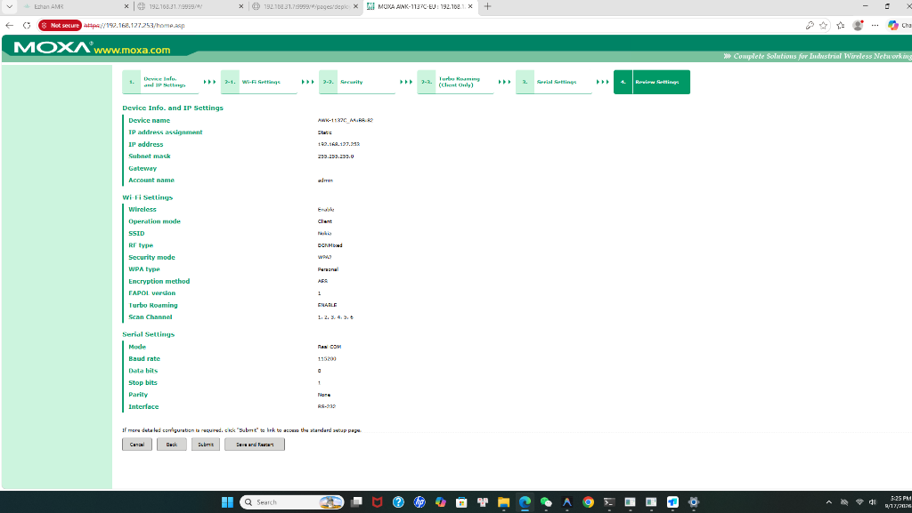

[BƯỚC 1: CẤP MẠNG IP TĨNH] ──> [BƯỚC 2: QUÉT MAP SLAM] ──> [BƯỚC 3: CÀI ĐIỂM DỪNG / SẠC / KỆ]
│ │
▼ ▼
[BƯỚC 6: GIAO LỆNH VẬN HÀNH] <── [BƯỚC 5: KẾT NỐI HỘP GỌI] <── [BƯỚC 4: ĐỒNG BỘ LÊN RCS V2]
System Settings ➔ Network Settings kết nối Wi-Fi nhà xưởng và gán IP tĩnh cố định (Ví dụ: 192.168.1.61).Map Settings ➔ New Map đặt tên map (VD: Esa_1). Lái xe quét map bằng Cần gạt ảo Remote Ctrl, Remote, hoặc Chuột USB. Quét xong bấm Save Map ➔ End Mapping ➔ Enter Map để xe tự động chốt định vị.Work Locations ➔ Add location ➔ Update ➔ Upload location.Special Locations bấm Update dòng Charge.Shelf Settings nhập kích thước 4 chân kệ ➔ Bấm Used.http://127.0.0.1) ➔ Vào Quản lý bản đồ thêm map Esa_1 và bấm Đồng bộ bản đồ ➔ Vào Quản lý thiết bị thêm xe với IP tĩnh.callbox...-SETUP) ➔ Mở trình duyệt vào http://192.168.4.1/ cài Wi-Fi nhà máy & IP Server ➔ Sau khi kết nối thành công, nhìn màn hình OLED lấy địa chỉ IP nhận được (dòng IP: ...) ➔ Vào Web RCS (http://127.0.0.1/device/callbox) dán IP này vào ô ICCID/IP để gán nút điều khiển (K1: Giao hàng, K2: Nâng kệ, K3: Về sạc).840 mm).180 mm, góc quét rộng 240°, tầm quét phát hiện vật thể tối đa 25 mét.55 mm (± 2mm), tải trọng nâng tối đa 300 kg. Chiều cao mặt bàn khi hạ là 210 mm, khi nâng đạt 265 mm cách mặt sàn.E-YLH-10A.Toàn bộ địa chỉ IP trong tài liệu (như 192.168.1.61, 192.168.1.100, 192.168.1.35...) là ví dụ minh họa. Khi triển khai tại xưởng, đội ngũ kỹ thuật sử dụng Bộ phát Wi-Fi chuyên dụng riêng (Moxa AWK-1137C-EU) hoặc dải mạng riêng do IT nhà máy cấp phát.
Các bước cài đặt IP tĩnh trên màn hình Robot:
DHCP sang Static IP:
192.168.1.61 (Đặt theo dải IP mạng thực tế)192.168.1.1 (Địa chỉ IP của Router / Gateway)255.255.255.0 | DNS: 8.8.8.8 hoặc 1.1.1.1Phiên bản Robot Central Dispatch System Project2 (V2) mang lại độ ổn định cao, hỗ trợ đa bản đồ và điều phối linh hoạt hạm đội Robot.
| Dịch Vụ | Cổng / Môi Trường | Mục Đích & Ghi Chú |
|---|---|---|
| Web Nginx Dashboard | Cổng 80 (hoặc 8080) |
Truy cập giao diện Web điều khiển qua: http://127.0.0.1/ hoặc http://localhost. |
| Backend Java Service | Ezhan.jar (JDK 17) |
Bộ xử lý điều phối trung tâm, lắng nghe REST API tại cổng 8080. |
| Cơ sở dữ liệu MariaDB | Cổng 3306 |
Database: Ezhan (Tài khoản: root / Mật khẩu: 123456). Lưu trữ bản đồ, điểm trạm, task. |
| License Key | config/license.key |
Chứa mã bản quyền kích hoạt cố định theo phần cứng máy tính và địa chỉ MAC. |
start.bat)start.bat.update_schema.sql.Ezhan.jar bằng môi trường Java di động jdk-17.admin / Mật khẩu admin123.Tạo bản đồ SLAM là bước quan trọng nhất để Robot hiểu không gian xưởng và tự động định vị.
[1. Tạo New Map] ──> [2. Lái xe quét quanh xưởng] ──> [3. Save Map] ──> [4. Enter Map chốt định vị]
New Map ➔ Nhập tên bản đồ gợi nhớ (Ví dụ: Esa_1 - Lưu ý viết đúng tên này để đồng bộ lên Web).Confirm.Tiện nhất, không cần remote phụ:
Remote Ctrl góc trên sang ON.Lái từ xa bằng cần Joystick:
Điều khiển mượt mà phía sau xe:
Remote Ctrl, cầm chuột đi sau xe kéo Joystick ảo cực kỳ nhẹ nhàng.Dùng cơ bắp khi chưa có tay cầm:
Save Map (Lưu bản vẽ).End Mapping (Kết thúc quét).Enter Map (Vào bản đồ).Position Confidence > 70% là bản đồ đã sẵn sàng hoạt động!Location from map để đồng bộ.Add location ➔ Đặt tên điểm (Ví dụ: Esa_1_ahuy, Esa_1_acong).Update ➔ Sau khi thêm đủ các điểm, bấm Upload location để lưu cố định.Tường ảo giúp ngăn chặn triệt để tình huống xe né vật cản rồi chui vào ngách hẹp kẹt bánh:
Esa_1.Draw Area ➔ Chọn Virtual Wall (Tường ảo).Save Drawing ➔ End Drawing. Xe sẽ coi đây là tường bê tông và tuyệt đối không bao giờ lách vào đó!Xe E300 sử dụng cơ chế lùi chấu tiếp xúc ở đuôi xe vào trạm sạc E-YLH-10A (54.75V / 10A).
┌───────────────────────────────┐
│ TRẠM SẠC ĐẶT SÁT TƯỜNG │
└──────────────┬────────────────┘
│
📍 ĐIỂM SẠC CHÍNH (Charge - Type 10)
▲
│ Lùi thẳng chậm 0.8m (< 0.1 m/s)
│
📍 ĐIỂM TIỀN TRẠM SẠC (Pre-charging - Type 11)
(Mũi tên hướng thẳng vào trạm sạc)
▲
│ Xe chạy tiến tới đây rồi xoay 180° quay đuôi lại
[ROBOT E300]
2 - 5 cm).Update tại dòng Charge.Return to charge để xe tự lùi cắm sạc vào trạm.Special Locations bấm Update lần 2 để chốt tọa độ tiếp xúc tuyệt đối 100%.0.8m - 1.0m với mũi tên hướng thẳng vào trạm sạc.Autonomous Charging = ON (Bật sạc tự động).Automatic Charging Threshold: Đặt là 20% (khi pin dưới 20%, xe tự hủy task chờ và quay về sạc).Save settings.Áp dụng cho dòng xe có cơ cấu mâm nâng kích điện chịu tải 300kg (Model E300 GT).
210 mm (21 cm). Gầm giá kệ trong xưởng phải cao tối thiểu 240 mm - 250 mm để xe chui lọt dễ dàng.55 mm (± 2mm).265 mm, nhấc bổng 4 chân kệ cách mặt sàn 1.5 cm - 2.5 cm để vận chuyển.Shelf Settings - Trang 72-75 User Manual)Vào System Settings ➔ Shelf: Bấm Add Shelf (hoặc sửa shelf_1), dùng thước dây đo thực tế và nhập thông số:
| Thông Số | Giá Trị Khuyến Nghị | Ý Nghĩa Kỹ Thuật |
|---|---|---|
| Shelf Width / Length | 0.650 m / 0.550 m |
Kích thước phủ bì chiều rộng và chiều dài mặt kệ hàng. |
| Leg Center Distance (Width) | 0.580 m |
Khoảng cách tâm chân trái sang tâm chân phải của kệ. |
| Leg Center Distance (Length) | 0.450 m |
Khoảng cách tâm chân trước sang tâm chân sau của kệ. |
| Actual Leg Width | 0.040 m (4 cm) |
Độ dày vật lý của thanh thép làm chân kệ. |
| Insertion Depth | -0.400 m |
Độ sâu xe chui vào gầm (để tâm mâm nâng nằm chính giữa tâm kệ). |
| Leg Expansion | 0.250 m ~ 0.300 m |
Vùng mở rộng để 4 ô vuông xanh ôm trọn chấm đỏ chân kệ, tránh xe báo cản. |
Sau khi nhập xong, bấm nút màu xanh Used để kích hoạt mẫu kệ ➔ Bấm Save settings.
Vào màn hình chính ➔ Chọn ô màu tím Lift Mode ➔ Create task (đặt tên NangKe_1):
Recognizing lifting | Stay Duration: 0s hoặc 3s.Recognizing lowering | Stay Duration: 0s hoặc 3s.Rời đi (Move) | Stay Duration: 0s.Lưu tuyến (Save route). Chọn tác vụ vừa tạo và bấm Start ➔ Xe tự động chạy đến A chui gầm nâng kệ lên, cõng sang B hạ xuống và tự động rút ra ngoài!Quy trình cài đặt, cấu hình và vận hành Hộp gọi không dây (Call Box V1.0) theo đúng tài liệu kỹ thuật chuẩn của nhà sản xuất Shenzhen Ezhan Technology Co., Ltd. Hộp gọi là thiết bị đầu cuối công nghiệp chuyên dụng cho cụm AMR, kết nối không dây độc lập qua giao thức WebSocket và hỗ trợ thông báo giọng nói tự động khi xe đến trạm.
[HỘP GỌI CALLBOX] ──(WebSocket 8765)──> [SERVER PC EZHAN RCS] ──(HTTP POST 8068)──> [ROBOT E300] (VD: 192.168.X.35) (VD: 192.168.X.100) (VD: 192.168.X.61) └────────────────────── CÙNG DẢI MẠNG BỘ PHÁT WI-FI RIÊNG NHÀ MÁY ─────────────────────┘
Để cài đặt và vận hành bất kỳ Hộp gọi mới nào, kỹ sư bắt buộc phải nắm vững trình tự 3 bước mấu chốt:
callbox...-SETUP, không có mật khẩu).http://192.168.4.1/ cài đặt Wi-Fi nhà máy: Nhập IP máy chủ Server RCS (Cloud server IP), chọn tên Wi-Fi nhà xưởng, nhập mật khẩu Wi-Fi và bấm Connect.IP: ...). Dùng chính địa chỉ IP này dán vào ô ICCID/IP trên Web điều phối RCS (http://127.0.0.1/device/callbox) để gán nút và điều khiển xe!Cấu tạo ngoại quan & Bố trí vật lý:
K1, K2, K3 có vòng đèn LED trợ sáng.| Thông Số Kỹ Thuật (Parameter) | Giá Trị Định Mức & Tiêu Chuẩn Chuẩn Hãng |
|---|---|
| Điện áp & Công suất định mức | DC 5V (qua cáp USB Type-C) | Công suất: 2W |
| Số lượng nút bấm tác vụ | 3 nút cơ học (K1, K2, K3) tích hợp vòng đèn LED chỉ thị trạng thái |
| Chuẩn mạng & Tần số không dây | Wi-Fi tiêu chuẩn 802.11 b/g/n | Băng tần: 2.4 GHz / 5.8 GHz |
| Giao thức & Cổng truyền thông | WebSocket (kết nối trực tiếp tới Server RCS qua cổng 8765) |
| Nhiệt độ & Độ ẩm hoạt động | -10℃ ~ +55℃ | Độ ẩm: ≤ 85% RH (không ngưng tụ) |
| Chất liệu vỏ ngoài | Nhựa kỹ thuật Resin cách điện, chịu lực công nghiệp |
Áp dụng theo đúng Mục IV: Cấu hình thông số Hộp gọi (Call Box Parameter Configuration) trong tài liệu hướng dẫn sử dụng của hãng:
5V / 2W.callbox1-SETUP hoặc callbox7-SETUP, mạng mở không có mật khẩu). Tên này tương ứng hiển thị trên màn hình OLED của hộp gọi.http://192.168.4.1/Callbox name: Nhập tên định danh mong muốn cho Hộp gọi.callbox1, callbox7).Save name để lưu lại. (Lưu ý: Sau khi đổi tên, kết nối lại vào Wi-Fi theo tên mới và truy cập lại trang này).Cloud server IP: Điền địa chỉ IPv4 của máy tính cài hệ thống điều phối Ezhan RCS (hoặc IP của robot trên cùng mạng cục bộ nếu kết nối trực tiếp, ví dụ: 192.168.1.100 hoặc theo dải IP thực tế).Save server IP để lưu lại.network: Chọn quét mạng hoặc chọn Manual input.Chọn mạng có chỉ số RSSI tối ưu nhất. RSSI là số âm: càng gần 0 thì tín hiệu sóng càng mạnh.
password: Nhập chính xác mật khẩu Wi-Fi của nhà xưởng.Connect để Hộp gọi kết nối vào mạng.Sau khi lưu và kết nối thành công, màn hình OLED mặt trước Hộp gọi hiển thị chuẩn xác 7 dòng trạng thái:
http://127.0.0.1/device/callbox (hoặc vào menu: Quản lý thiết bị ➔ Cấu hình hộp gọi).admin, mật khẩu admin123 (hoặc 123456) và mã xác thực captcha ➔ Bấm Đăng nhập (Log in).Device IP (Ví dụ: 192.168.0.71 hoặc 192.168.1.61).Thêm Hộp gọi mới (New Call Box) hoặc bấm nút màu xanh Sửa (Edit) tại dòng hộp gọi cần cài đặt.Call Box Name: Nhập tên hộp gọi đã đặt ở Mục 8.2 (Ví dụ: callbox7 hoặc callbox1).Device IP: Dán địa chỉ IP của Robot AGV đã sao chép ở Bước 3.ICCID/IP: Điền chính xác địa chỉ IP của Hộp gọi đang hiển thị trên màn hình OLED (dòng IP: ..., ví dụ: 192.168.70.44).Department: Chọn phòng ban liên kết (Ví dụ: Yizhan Zhihui hoặc Ezhan hoặc phòng ban thực tế).Bấm nút + Thêm (Add Button) để cấu hình lần lượt tối đa 3 nút cơ học (K1, K2, K3):
| Button ID | Tên Nút (Button Name) | Tác Vụ Liên Kết (Bound Task) | Trạm Liên Kết (Bound Station) |
|---|---|---|---|
| 1 (K1) | K1 hoặc giao_hang |
Delivery Task (hoặc điền trùng tên trạm / để trống để xe di chuyển đến trạm) |
Chọn tên trạm đích trên bản đồ xe (VD: Esa_1_ahuy) |
| 2 (K2) | K2 hoặc nang_ke |
Nhập chính xác Tên chuỗi tác vụ kích nâng kệ đã tạo trên xe (VD: NangKe_1) |
Chọn trạm kệ hàng (VD: Esa_1_ahuy) |
| 3 (K3) | K3 hoặc ve_sac |
Charge Task (Lệnh điều xe tự động lùi về trạm sạc pin) |
Chọn trạm sạc (VD: Esa_1_sac) |
Chức năng: Cho phép Hộp gọi tự động phát thông báo bằng giọng nói qua loa tích hợp khi Robot di chuyển đến trạm làm việc, cung cấp lời nhắc nhở bằng âm thanh cho công nhân bốc dỡ hàng.
Phương pháp cấu hình từng bước:
| Mô Tả Lỗi (Fault Description) | Hạng Mục Kiểm Tra (Inspection Items) | Hành Động Khắc Phục (Corrective Actions) |
|---|---|---|
| Không có phản hồi khi bấm nút gọi (No response on call) |
Kiểm tra trạng thái cấp nguồn (Check power supply status) |
Đảm bảo nguồn điện 5V ổn định cho hộp gọi, đèn LED nút bấm và màn hình OLED phải sáng bình thường. |
| Cấu hình tín hiệu có bình thường không? (Is signal configuration normal?) |
Cấu hình lại Hộp gọi theo các bước vận hành qua http://192.168.4.1/, kiểm tra chính xác Cloud server IP và mật khẩu Wi-Fi. |
|
| Tín hiệu sóng Wi-Fi của Hộp gọi có ổn định không? (Is call box signal connected normally?) |
Kiểm tra chỉ số RSSI (phải tối ưu, ≥ -65 dBm). Bố trí thêm bộ định tuyến Wi-Fi công nghiệp hoặc chuyển Hộp gọi đến vị trí có sóng phủ tốt hơn. |
Giao diện Web RCS cung cấp bảng giám sát trực quan toàn bộ hạm đội Robot theo thời gian thực 24/7.
Xem chi tiết (Detail) để mở bảng giám sát chuyên sâu.| Thông Số Web RCS | Ý Nghĩa Kỹ Thuật | Trạng Thái Chuẩn & Ngưỡng Lưu Ý |
|---|---|---|
| Trạng thái kết nối (Online/Offline) | Tình trạng liên lạc mạng Wi-Fi giữa Server và xe. | Online (Xanh lá): Mạng tốt. Offline (Xám/Đỏ): Mất sóng Wi-Fi hoặc sai IP. |
| Mức pin (%) (Battery Level) | Dung lượng pin Lithium 48V thời gian thực. | > 50%: Hoạt động bình thường. < 20%: Xe tự động hủy task về sạc pin. |
| Vị trí hiện tại (Current Location) | Tên trạm làm việc hoặc tọa độ xe đang dừng. | Hiển thị đúng trạm (VD: Esa_1_ahuy) hoặc tọa độ (X, Y, Yaw). |
| Độ tin cậy định vị (Confidence) | Độ chính xác so khớp giữa LiDAR và bản đồ SLAM. | > 70%: Định vị xuất sắc, tự chạy an toàn. < 50%: Mất hướng, xe tự ngắt motor chống va chạm. |
| Bản đồ hiện tại (Current Map) | Tên bản đồ số đang kích hoạt trên xe. | Phải trùng khớp 100% với tên bản đồ trên RCS (Ví dụ: Esa_1). |
| Trạng thái vận hành (Mode) | Tiến trình làm việc của xe. | Idle (Chờ việc), Running (Đang chạy), At Station (Đỗ trạm), Charging (Đang sạc). |
Charge Task (Về sạc): Phát lệnh đưa xe tự động quay đầu chạy về trạm sạc cắm chấu đồng sạc pin ngay lập tức.Go to Standby (Về điểm chờ): Điều xe chạy về vị trí đỗ quy định để giải phóng lối đi trong xưởng.Pause Task (Tạm dừng): Khóa phanh dừng xe tại chỗ nhưng vẫn lưu lộ trình (dùng khi phát hiện sự cố trên đường).Resume Task (Tiếp tục): Cho xe tiếp tục lăn bánh sau khi vật cản đã được dọn dẹp hoặc sau khi nhả nút E-Stop.Cancel Task (Hủy nhiệm vụ): Xóa bỏ nhiệm vụ hiện tại, giải phóng phanh hoàn toàn và đưa xe về trạng thái Idle sẵn sàng nhận lệnh mới.+ Thêm.Esa_1).Đồng bộ bản đồ (Sync Map). Server PC sẽ tự động kéo toàn bộ tọa độ điểm trạm làm việc, trạm sạc và tường ảo về máy chủ.| Hiện Tượng | Nguyên Nhân Cốt Lõi | Cách Xử Lý Tức Thì |
|---|---|---|
| Bấm Hộp gọi xe đứng im | Lệch IP hoặc ô Tác vụ liên kết điền sai chữ delivery / Charge. |
Đổi đúng IP cố định; xóa trống ô Tác vụ liên kết hoặc điền trùng tên trạm. |
| Hộp gọi báo "Nhiệm vụ thất bại" | Xe đang đỗ ngay tại trạm đích; hoặc sai tên trạm; hoặc xe chưa bấm Enter Map. | Kéo xe ra xa trạm 2 mét; đối chiếu tên trạm trên map; bấm Enter Map vào Delivery Mode. |
| Vừa xong việc bấm lệnh mới xe khựng lại (đèn xanh dương) | Delivery Stay Duration trên xe đang đếm ngược chờ bốc hàng (30s-60s). |
Vào System Settings ➔ Basic Settings chỉnh Delivery Stay Duration = 0s. |
| Xe từ chối chạy do độ định vị thấp (< 50%) | Robot mất phương hướng, thuật toán SLAM khóa phanh chống đâm va. | Bấm nút Relocalization (Định vị lại) trên màn hình xe hoặc lái xe ra giữa sàn quét lại tường. |
| Gặp cản xe bật đèn ĐỎ, cản đi ra vẫn khóa đèn ĐỎ | Thanh cản Bumper chân xe bị chạm hoặc bị Route Timeout. | Nhấn nút E-Stop trên trụ rồi xoay nhả lên để Reset (hoặc bấm Resume trên Web). |
| Xe né cản chui vào khe hẹp rồi kẹt | Bản đồ chưa vẽ Tường ảo ở các ngách hẹp giữa máy móc. | Dùng công cụ Virtual Wall vẽ vạch đỏ bịt kín ngách hẹp, hoặc chuyển sang FIXED PATH MODE. |
| Nâng kệ lên rồi nhưng xe đứng im không chạy | Thanh giằng kệ che mắt Lidar (18cm); hoặc 4 ô vuông xanh trong Cấu hình kệ chưa ôm trọn chân kệ. | Kiểm tra mắt Lidar thông thoáng; tăng Mở rộng chân = 0.30m trong Shelf Settings để nuốt trọn chấm đỏ chân kệ. |
Thiết bị MOXA AWK-1137C-EU là dòng Access Point/Bridge/Client Wi-Fi công nghiệp chuẩn 802.11a/b/g/n, đóng vai trò hạ tầng truyền thông không dây huyết mạch để duy trì kết nối thời gian thực 24/7 giữa Máy chủ Ezhan RCS V2, Hạm đội Robot AGV E300 và Các Hộp gọi Callbox trong nhà xưởng.
Trong hệ thống AGV E300, MOXA AWK-1137C-EU được triển khai theo 2 mô hình vận hành:
| STT | Số Serial (S/N) | Địa Chỉ MAC Cố Định | IP Mặc Định | Quy Hoạch Đề Xuất (Mạng 192.168.31.x) |
|---|---|---|---|---|
| 01 | TBBFQ1015595 |
00:90:E8:AA:B8:82 |
192.168.127.253 | AP 01 192.168.31.251 |
| 02 | TBZJQ1006012 |
00:90:E8:8F:CE:AB |
192.168.127.253 | AP 02 192.168.31.252 |
| 03 | TBZJQ1005718 |
00:90:E8:8F:CD:82 |
192.168.127.253 | AP 03 192.168.31.253 |
| 04 | TBBBQ1005144 |
00:90:E8:A4:6B:8D |
192.168.127.253 | Client AGV 01 192.168.31.254 |
| 05 | TBACQ1029625 |
00:90:E8:95:F0:70 |
192.168.127.253 | Client AGV 02 192.168.31.255 |
| 06 | TBZCQ1018491 |
00:90:E8:87:EA:83 |
192.168.127.253 | Dự phòng / AP 04 192.168.31.256 |
ANT1 và ANT2 trước khi cắm nguồn điện. Nếu cấp nguồn khi chưa vặn anten, công suất sóng phản xạ ngược có thể làm hỏng tầng khuếch đại công suất RF của thiết bị.192.168.127.100255.255.255.0https://192.168.127.253/adminmoxa
Sau khi bấm vào nút màu xanh Quick Setup tại trang chủ, hệ thống sẽ mở màn hình cài đặt mạng ban đầu:
MOXA_AP_01 nếu làm trạm phát, hoặc MOXA_AGV_01 nếu lắp trên robot).(GMT+07:00) Bangkok, Hanoi, Jakarta để đồng bộ nhật ký thời gian thực.192.168.31.251 cho AP 1).192.168.127.253 và đổi sang dải mạng xưởng ở bước hoàn tất cuối cùng.255.255.255.0192.168.31.1 (Địa chỉ router mạng xưởng).moxa).
Sau khi nhập xong, bấm nút Next ở góc dưới bên trái.
Tại màn hình Bước 2-1, xuất hiện 2 phương thức cấu hình:
Manual (Khuyên dùng): Cấu hình thủ công toàn diện theo chuẩn hạ tầng công nghiệp (AP / Client, tần số 5GHz, kênh truyền, tên mạng SSID).AeroMag: Chế độ tự động ghép nối giữa các thiết bị Moxa độc quyền (chỉ dùng khi toàn bộ hệ thống đều dùng Moxa tương thích).

Giải nghĩa các trường thông số trên màn hình này:
Enable để kích hoạt sóng vô tuyến.Client: Nếu cục Moxa này lắp trên thân robot AGV E300 để thu sóng Wi-Fi từ xưởng truyền về bo mạch điều khiển của xe.Access Point (AP): Nếu cục Moxa này đặt cố định trên cột xưởng để phát sóng Wi-Fi cho các xe và hộp gọi kết nối vào.Site Survey:
Site Survey bên cạnh để Moxa tự quét các trạm phát trong xưởng và bấm chọn kết nối tự động.AGV_NETWORK_5G).B/G/N Mixed (băng tần 2.4 GHz).A/N Mixed) để tốc độ cao và hoàn toàn không bị can nhiễu bởi motor công nghiệp hay thiết bị di động dân dụng trong xưởng.Access Point (AP).5 GHz (A/N Mixed) hoặc B/G/N Mixed.AGV_NETWORK_5G.Channel 36, AP 02 chọn Channel 44, AP 03 chọn Channel 149 để các AP không bị chồng lấn sóng).Client.A/N Mixed hoặc B/G/N Mixed).Site Survey để chọn.Sau khi chọn xong, bấm nút Next ở góc dưới bên trái để chuyển sang bước 2-2. Security.

WPA2.Personal (chuẩn WPA2-PSK an toàn).AES (chuẩn mã hóa tốc độ cao, không trễ mạng).1.Sau khi nhập mật khẩu, bấm nút Next ở góc dưới bên trái để tiếp tục.
Do ở Bước 2-1 anh chọn chế độ Client (lắp trên robot AGV), hệ thống sẽ tự động chuyển sang cấu hình Client-Based Turbo Roaming. Đây là công nghệ độc quyền tối quan trọng giúp robot AGV khi di chuyển liên tục qua các khu vực xưởng khác nhau sẽ chuyển đổi giữa các trạm phát Wi-Fi cực nhanh (< 150 ms), đảm bảo không bao giờ bị rớt lệnh hay ngắt kết nối với máy chủ RCS.

[x] Enable (bắt buộc bật).Scan Channel 1 = 6 (kênh sóng Wi-Fi 2.4GHz hiện tại).Scan Channel 1: Chọn 1Scan Channel 2: Chọn 6Scan Channel 3: Chọn 11Not Scanning.Sau khi chọn xong, bấm nút Next ở góc dưới bên trái để tiếp tục.
Thiết bị MOXA AWK-1137C-EU có tích hợp thêm 1 cổng nối tiếp COM (hỗ trợ RS-232/422/485) để truyền dữ liệu cho các thiết bị ngoại vi không có cổng mạng.

Serial Interface: Enable, Real COM Mode, Baud rate: 115200).Disable ở mục Serial Interface nếu muốn tắt cổng này để tối ưu hóa tài nguyên phần cứng.Sau đó, bấm nút Next ở góc dưới bên trái để chuyển sang bước cuối cùng: Bước 4 - Review Settings.
Màn hình hiển thị toàn bộ bảng tổng kết các tham số đã cài đặt trong các bước vừa qua:

Operation mode: Client (chuẩn bộ thu trên xe AGV).SSID: Nokia (hoặc tên Wi-Fi nhà xưởng).Security: WPA2 Personal AES.Turbo Roaming: ENABLE (đã kích hoạt chuyển vùng siêu tốc).Submit: Chỉ áp dụng cấu hình vào bộ nhớ RAM tạm thời (chưa lưu vào chip Flash, nếu tắt nguồn sẽ mất).Save and Restart (KHUYÊN DÙNG BẤM NÚT NÀY): Thiết bị sẽ tự động ghi toàn bộ cấu hình vĩnh viễn vào bộ nhớ Flash ROM và tự khởi động lại module ngay lập tức. Đây là cách nhanh nhất và an toàn nhất để hoàn tất!Khi hoàn tất Quick Setup và bấm Activate, thiết bị MOXA chỉ mới ghi cấu hình vào bộ nhớ RAM tạm thời. NẾU RÚT NGUỒN HOẶC MẤT ĐIỆN, TOÀN BỘ CẤU HÌNH SẼ BỊ MẤT VÀ THIẾT BỊ QUAY LẠI MẶC ĐỊNH!
Để lưu cấu hình vĩnh viễn, anh bắt buộc phải thực hiện 2 thao tác sau trên thanh Menu bên trái:
Save Configuration ➔ Bấm nút Save (đợi thanh tiến trình chạy 100% để ghi vào bộ nhớ Flash).Restart ➔ Bấm nút Restart để khởi động lại module MOXA.Sau khi khởi động lại (đèn Ready chuyển sang xanh lá ổn định), thiết bị sẽ chính thức chạy với địa chỉ IP mới 192.168.31.xxx đã đặt!